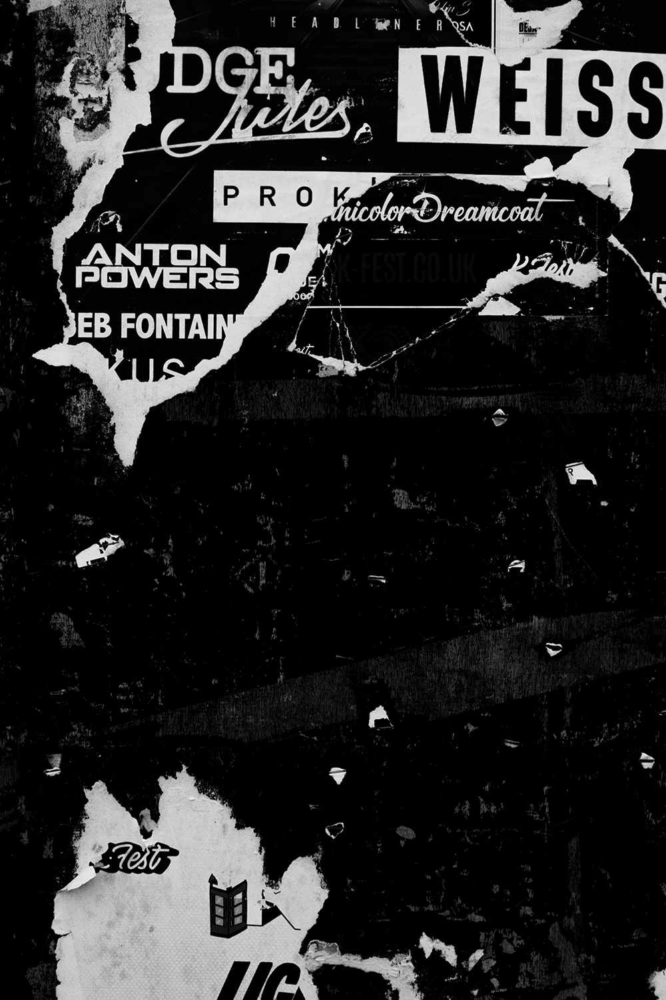

Education
2020 : Langara College( Computer Science major)
2021 – RMIT: 1st year student majored in Information Technology
Volunteering activities
2020: IT assistant for Vancouver Education Institute
More information
Hobbies
- Games and Music: Music and video games are two of my favorite pastimes to indulge in. I always listen to music while working since it helps me to concentrate. By the way, music can lift my mood when I am having a poor day. Even while I enjoyed playing video games when in high school, I currently only do so to relieve tension caused by looming deadlines
- Sport: I took part in basketball for three years, but I had to put it on hold to focus on studying for my graduation exam. Playing badminton, on the other hand, is my favorite sport. During high school, I wished that every day was badminton day in my physical education class. In addition, I always devote one hour every day, six days a week work out at home. Finally, sport also allows me to decompress and relieve tension caused by schoolwork.
Goals
- Career: I wish to pursue a career as a data scientist. Since I have a second chance to pursue my academic goals at RMIT, I want to focus on learning, bettering myself, meeting new people, and being more diligent. I, for one, take pleasure in the minor things so that I may show appreciation for my efforts and times in the big picture.

Interest in IT
Since I was in grade 8, I was interested in programming. My interest was sparked after watching a Korean series about cyber security detectives. I competed in various coding contests in grade 9 and won third place in the district coding competition. Then, after completing secondary school, I gave up coding since I recognized my inability to do so.
When I was in 11th grade, I had the opportunity to study in Vancouver, Canada. I started my coding education by learning Python and C programming languages. After graduating from high school, I chose to pursue a degree in computer science and enrolled at Langara College.
As a result of COVID-19's tremendous effect, I found myself departing from the norm once more when it came to coding. After my first semester at Langara, I returned to Vietnam and transferred to RMIT in order to be closer to my family and friends. As my third attempt, I chose Information Technology as my next step.
I discovered that I am a supportive person, I want to assist everyone as much as I can, in the meanwhile, I may pursue a career as a data scientist in the future.
My experience in IT:
- Basic Java
- Basic Python
- Basic SQL
- Basic PHP
Ideal job
Becoming a data scientist is a lifelong ambition of mine. My attention is initially drawn to FPT because of their salary and benefits. FPT is a large technology firm, which implies their working environment will be significantly better than others, and I would also have the opportunity to learn from pros throughout time.
Because FPT is regarded as a "dream firm" by many, the prerequisites to join the company are more stringent. Firstly, FPT requires a Bachelor's, Master's, or Ph.D. degree. After completing my Bachelor's degree, I intend to continue my education at a higher level. My next step would be to pursue a master's degree since I want to begin working full-time as soon as possible.
FPT seeks applicants for a wide range of skills such as algorithms, machine learning, toolkits, and other topics that will require more than three years of experience to master.
Python, Java, and SQL are among those that I am familiar with. I am only in my second semester, thus, I do not have the necessary abilities to meet their requirements at this time. After school hours, I began doing research and looked for additional courses, in which I could learn about and solve practical data problems from technology companies. In my next or fourth semester, I hope to have an internship or part-time employment related to data collection and analysis.
Finally, the most critical talents for a data scientist should have are communicating and applying skills. On the other hand, in my field, the ability to utilize knowledge is really crucial. Learning at school is not sufficient for me, so I enroll in additional classes to broaden my knowledge while simultaneously preparing my CV for the second year at my university.